User’s Hardware Manual_V1.1
Document classification: □ Top secret □ Secret □ Internal information ■ Open
Copyright
The copyright of this manual belongs to Baoding Folinx Embedded Technology Co., Ltd. Without the written permission of our company, no organizations or individuals have the right to copy, distribute, or reproduce any part of this manual in any form, and violators will be held legally responsible.
Forlinx adheres to copyrights of all graphics and texts used in all publications in original or license-free forms.
The drivers and utilities used for the components are subject to the copyrights of the respective manufacturers. The license conditions of the respective manufacturer are to be adhered to. Related license expenses for the operating system and applications should be calculated/declared separately by the related party or its representatives.
Revision History
Date |
Version |
SoM Version |
Carrier Board Version |
Revision History |
|---|---|---|---|---|
04/09/2025 |
V1.0 |
V1.1 |
V1.1 |
Initial Version |
12/09/2025 |
V1.1 |
V1.1 |
V1.1 |
1. Added notes in section 3.5.1; |
Overview
This manual aims to help you quickly get familiar with the product, understand interface functions and configurations. It covers the interface functions and introductions of the development board, product power consumption, and methods for troubleshooting issues during use. Some commands are annotated in the description for user convenience, with a focus on practicality. For information on pin function multiplexing and hardware design guidelines, please refer to Forlinx’s “FET3506x Pin Multiplexing Comparison Table” and “FET3506x-S Design Guide”.
There are four chapters:
Chapter 1. provides an overall overview of the CPU, briefly introducing its performance and application industries;
Chapter 2. offers a general introduction to the SoM, including descriptions and functions of connector pins;
Chapter 3. introduces the development board in multiple chapters, covering hardware principles and simple design ideas;
Chapter 4. describes the product’s power consumption and other considerations.
Additionally, the manual includes explanations of some symbols and formats.
Format |
Meaning |
|---|---|
Note |
Note or particularly important information must be read carefully. |
📚 |
Relevant explanations regarding the testing section |
️️🛤️ |
Related paths. |
1. Rockchip RK3506B Description
RK3506 is a high-performance application processor launched by Rockchip. The processor is built on a 22nm advanced process and integrates three ARM Cortex-A7 cores running at up to 1.5GHz, along with a dedicated 200MHz Cortex-M0 core. It is designed for intelligent voice interaction, audio I/O processing, image output, and other digital multimedia applications.
RK3506 incorporates a 2D hardware engine and a display output engine, which help minimize CPU overhead to meet demanding image display requirements.
RK3506 features a rich set of peripheral interfaces, including I2S, PCM, TDM, PDM, SPDIF, Audio DSM, Audio ADC, USB2 OTG, RMII, and CAN, supporting diverse application development while reducing hardware complexity and cost.
RK3506 supports a high-performance external memory interface (DDR2/DDR3/DDR3L), capable of meeting high memory bandwidth demands.
The OK3506B-S12 development board uses the commercial-grade RK3506B processor by default.
RK3506B Block Diagram
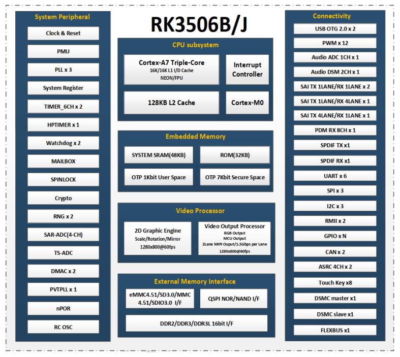
2. FET3506B-S SoM Description
2.1 Appearance Diagram
Front（ NAND Version）
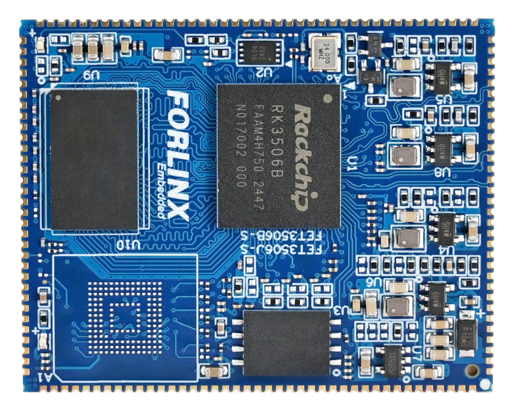
Back
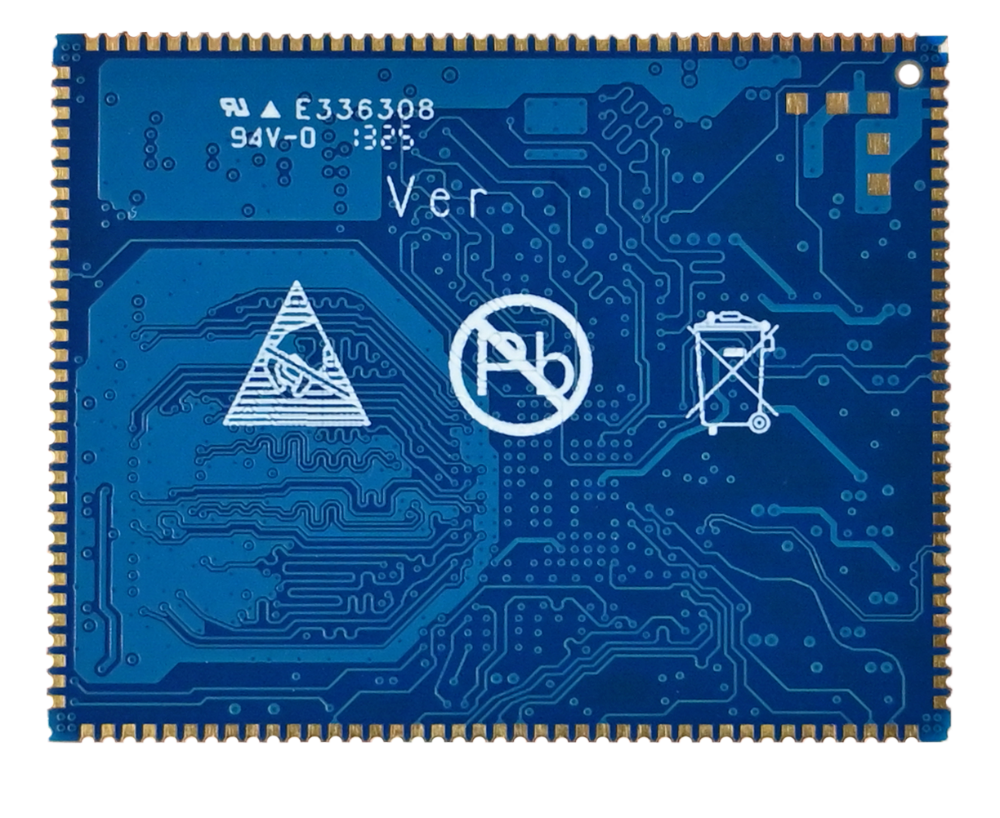
2.2 FET3506B-S SoM Dimension Diagram
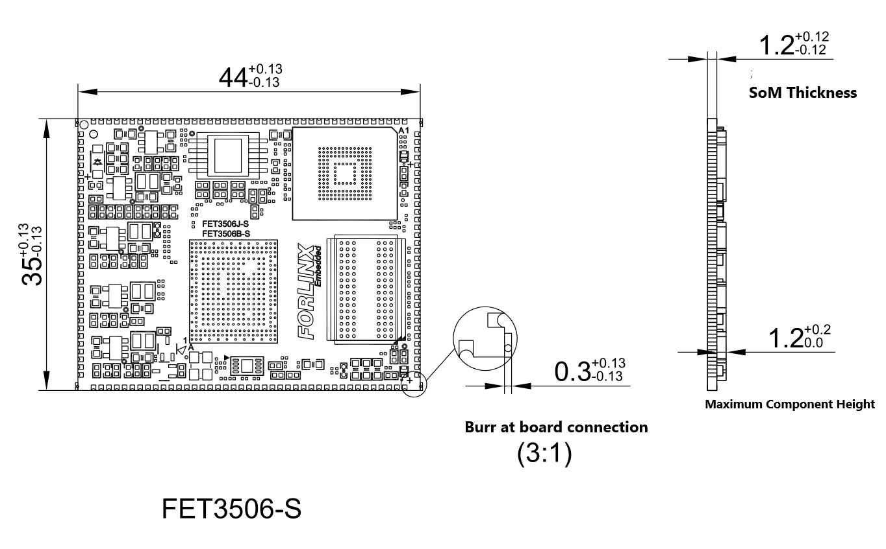
Dimensions: 44mm × 35mm, dimensional tolerance ±0.13mm. For more dimensional details, please refer to the DXF file.
Plate making process: 1.2mm thickness, 8-layer immersion gold PCB.
Stamp-hole package, with 146 pins.
The FET3506J-S and FET3506B-S share the same form factor, differing only in the CPU.
2.3 Performance Parameter
2.3.1 System Frequency
Name |
Specification |
Description |
|||
|---|---|---|---|---|---|
Minimum |
Typical |
Maximum |
Unit |
||
System Frequency |
— |
— |
1.5 |
GHz |
— |
System RTC |
— |
32.768 |
— |
KHz |
— |
2.3.2 Power Parameter
Parameter |
Pin No. |
Specification |
Description |
|||
|---|---|---|---|---|---|---|
Minimum |
Typical |
Maximum |
Unit |
|||
Main Power Supply Voltage |
VSYS |
4.75 |
5 |
5.25 |
V |
— |
No-load current |
— |
54 |
mA |
Please refer to the power consumption table in the appendix |
||
Overload current |
— |
145 |
mA |
Please refer to the power consumption table in the appendix |
2.3.3 Working Environment
Parameter |
Specification |
Description |
||||
|---|---|---|---|---|---|---|
Minimum |
Typical |
Maximum |
Unit |
|||
Operating temperature |
Working environment |
-20 |
25 |
+80 |
℃ |
Commercial level |
Storage Environment |
-40 |
25 |
+125 |
℃ |
||
Working environment |
-40 |
25 |
+85 |
℃ |
Industrial Level |
|
Storage Environment |
-40 |
25 |
+125 |
℃ |
||
Humidity |
Working environment |
10 |
— |
90 |
％RH |
No Condensation |
Storage Environment |
5 |
— |
95 |
％RH |
2.4 SoM Interfaces
Function |
Quantity |
Parameter |
|---|---|---|
USB2.0 |
2 |
Support 1 x USB2.0 HOST and 1 x USB 2.0 OTG, wherein the OTG supports image flashing. |
UART(1) |
≤6 |
UART3, UART4, and UART5 support flow control, with a maximum baud rate of 4 Mbps. |
SPI |
≤3 |
SPI0 and SPI1 are general-purpose SPI controllers supporting both master and slave modes. SPI2 is an SPI2APB controller, supporting slave mode only, typically used for firmware updates or other data streams |
I2C（2） |
≤3 |
Up to 1Mbit/s |
RMII |
≤2 |
Supports RMII interface of 10/100Mbps |
SARADC（3） |
≤4 |
10bits, sampling rate up to 1MS/s |
FLEXBUS |
≤1 |
FLEXBUS is equivalent to parallel 16 bit interface and is divided into two groups of FLEXBUS 0/1. |
Touch Key |
≤8 |
|
MIPI-DSI（4） |
≤1 |
Support 1 x MIPI DSI TX, 2-lanes, 1.5Gbps/Lane, resolution up to 1280 X 1280 @ 60fps; |
RGB |
≤1 |
Supports RGB 888 format with resolution up to 1280 X 1280 @ 60fps |
DSMC |
≤1 |
Support 1 x master or 1 x slave |
TF card(5) |
≤1 |
Compatible with SDIO 3.0 protocol, 4bits data bit width |
SAI |
≤4 |
Supports protocol I2S, PCM, TDM, sampling rate up to 192kHz |
ACODEC |
≤1 |
RK3506 has built-in ACODEC and supports 1 pair of differential MIC inputs |
PDM |
≤1 |
Up to 8 channels, sampling rate up to 192KHz, master receive mode |
SPDIF |
≤1 |
|
CAN |
≤2 |
Supports CAN2.0B, data rate up to 8Mbps |
PWM |
≤11 |
|
RM_IO |
≤32 |
RM _ IO is an IO matrix of 32 pins |
GPIO(6) |
≤93 |
Note:
The parameters in the table are the theoretical values of hardware design or CPU;
“TBD” means the function has not been developed in this phase.
UART0 is the debugging serial port and is not recommended for other functions. Up to 5 x serial ports can be used.
I2C2 is already connected to an EEPROM with address 0x50, and an external 2K pull-up resistor to 3.3V. When used on the carrier board, ensure no device address conflicts occur. Please note that if the I2C2 bus damaged externally, it may affect the SoM ability to read EEPROM data, thereby impacting normal boot-up.
SARADC_IN0 is reserved exclusively for SYSTEM BOOT sequence settings, while SARADC_IN1 is allocated for button input sampling and the fixed Recovery mode key; neither is recommended for general ADC purposes. The total number of user-available ADC channels is 2.
RGB and MIPI-DSI share the same VOP (Video Output Processor), supporting only single-screen display.
The TF card and the SoM’s eMMC share an SDMMC controller. Therefore, the TF card can only be used on the SoM with NAND.
The six pins related to MIPI_DSI can only be used as GPO.
2.5 FET3506B-S SoM Pin Definitions
2.5.1 FET3506B-S SoM Pin Schematic
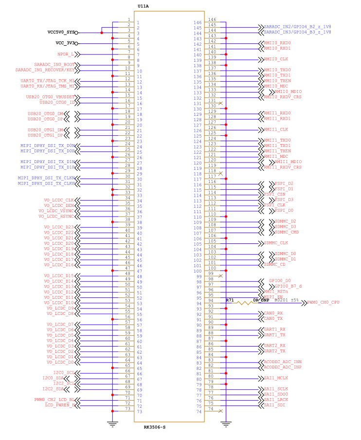
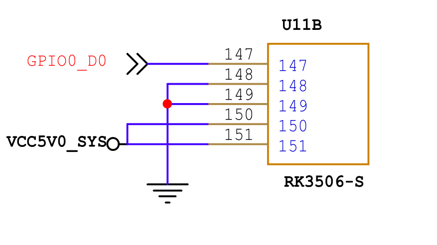
2.6 SoM Hardware Design Description
Power Pin
Function |
Signal Name |
I/O |
Default Function |
Pin Number |
|---|---|---|---|---|
Power supply |
VCC5V0_SYS |
Power Input |
Power Supply for SoM: |
2.3 |
Power enable |
VCC_3V3 |
Power output |
It is an enable signal used exclusively for controlling the external power of |
5 |
Ground |
GND |
Ground |
Power ground and signal ground on the SoM. All GND pins must be connected. |
System Control Pin
Function |
Signal Name |
I/O |
Default Function |
Pin Number |
|---|---|---|---|---|
CPU reset |
NPOR_L |
I |
SoM power reset, low level effective. Do not add additional capacitive load to this pin, |
7 |
BOOT selection |
SARADC0_IN0_BOOT |
I |
When the signal is grounded, the startup card enters the Maskrom download mode. |
9 |
Reset mode |
SARADC0_IN1_RECOVERY/KEY |
I |
When the signal is grounded, the startup card enters the Recovery download mode. |
10 |
Debug Port |
UART0_TX_DEBUG UART0_RX_DEBUG |
I/O |
Debug Port, please keep the port functions. |
12.13 |
The FET3506B-S SoM integrates the power supply, reset monitoring circuit, and memory circuits into a compact module, requiring minimal external circuitry. To form a minimal operational system, only a 5V power supply is needed, as shown in the following diagram:
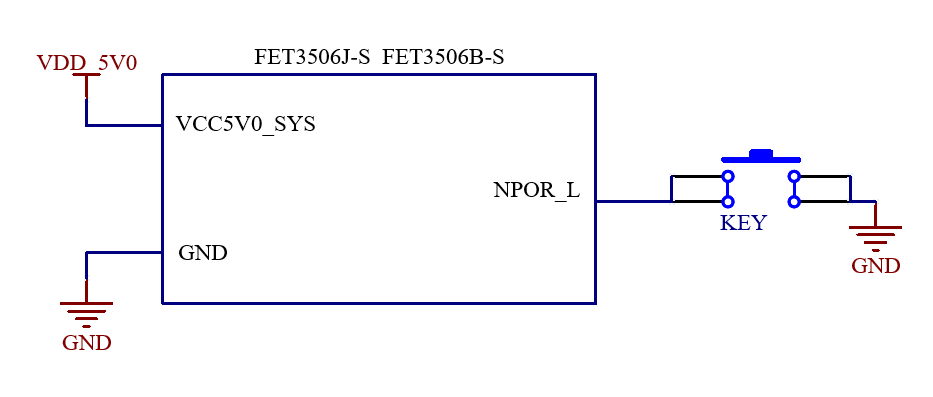
Refer to “Appendix IV. Minimum System Diagram” However, in most cases, it is recommended to connect some external devices—such as a debugging serial port and a port for flashing images—in addition to the minimal system. Otherwise, you can not check whether the system has booted. After completing these steps, you can then add the required functions based on the SoM’s default interface definition provided by Forlinx.
For the design of the SoM’s peripheral circuits, please refer to Section 3.5, “OK3506x-S2 Carrier Board Description”.
3. OK3506B-S12 Embedded Development Description
3.1 Development Board Interface Diagram
Connection method: Stamp hole. The main interfaces are shown in the figure below:
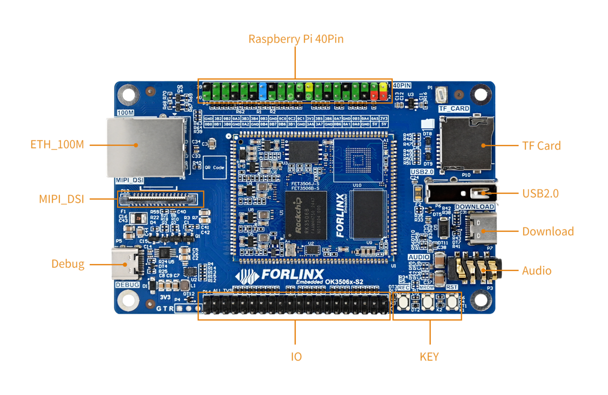
3.2 Development Board Dimension Diagram
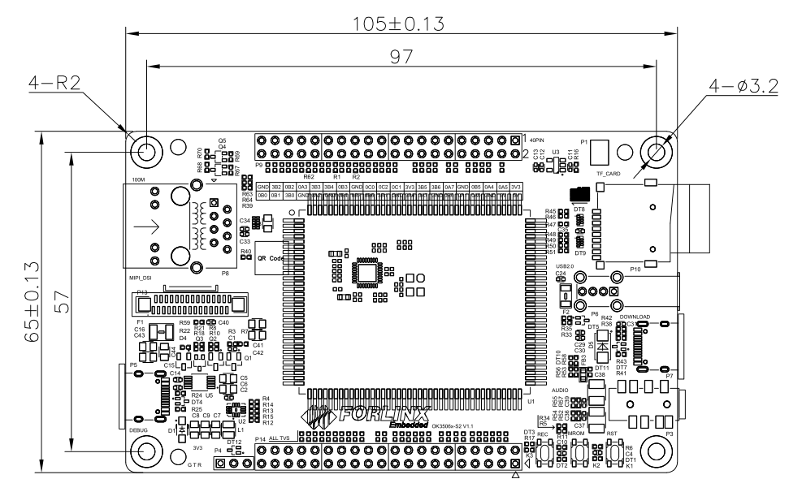
PCB: 105mm×65mm
Mounting hole dimensions: Pitch: 97mm × 57mm, hole diameter: 3.2mm.
Plate making process: 1.6mm thickness, 4-layer PCB.
Voltage: DC 5V
3.3 Naming Rules
A-B-C+DEF:G-H
Field |
Field Description |
Value |
Description |
|---|---|---|---|
A |
Product Line Identification |
OK |
Forlinx Embedded Carrier Board |
- |
Separator |
- |
|
B |
CPU Name |
3506 |
RK3506 |
- |
Segment Identification |
- |
|
C |
Connection |
S2 |
Stamp-hole |
+ |
Segment Identification |
+ |
The configuration parameter section follows this identifier. |
D |
Type Label |
M |
Carrier board (Carrier board is marked with M, not filled in by default) |
E |
Expansion Board |
||
E |
Operating Temperature |
C |
0 to 70℃ Commercial-grade |
I |
-40 to 85℃ Industrial-grade |
||
F |
PCB Version |
11 |
V1.1 |
xx |
Vx.x |
||
: |
Separator |
: |
It is followed by the manufacturer’s internal identification. |
G |
Connector Origin |
N |
No Partition/ No Connector |
- |
Connector |
- |
Grade Mark Connector |
H |
Grade Identification |
PC |
Prototype Sample |
Blank |
Mass Production |
||
SC |
Special-purpose use: According to the customer’s special requirements to make the specific modifications. |
3.4 Carrier Board Interfaces
Function |
Quantity |
Parameter |
|---|---|---|
MIPI-DSI（1） |
1 |
2-lane MIPI-DSI Screen, support capacitive touch and backlight adjustment |
RASPBERRYPI IO |
40 |
Compatible with Raspberry Pi 40PIN IO |
IO&POWER |
40 |
A set of IO pins is led out, which can be multiplexed for LCD and DSMC functions (2). |
TF Card |
1 |
Data rate up to SDR52; |
KEY |
3 |
Three keys RECOVERY, MASKROM and RESET are reserved. |
USB2.0 |
1 |
USB2.0 |
Ethernet |
1 |
Standard RJ45 socket is brought out for 100 Mbps Ethernet port. |
Audio |
1 |
Stereo headphone output, headphone recording |
OTG |
1 |
Supports firmware flashing via USB. |
DEBUG |
1 |
Integrated into a single Type-C port, enabling connection to a PC for debugging. |
Note:
The parameters in the table are the theoretical values of hardware design or CPU;
MIPI-DSI and LCD share multiplexed interfaces and can only be used one at a time;
DSMC and LCD cannot be used simultaneously.
3.5 OK3506x-S2 Carrier Board Description
**Note: **
The component UID with “_DNP” mark in the diagram below represents it is not soldered by default;
The schematic diagrams in this manual are only for interface descriptions. Please refer to the source file materials for hardware design.
3.5.1 Carrier Board Power
The carrier board power input is DC 5V, supplied through a TYPE-C port. The DEBUG interface P5 is directly connected to 5V, while the program download port is connected through a diode. This DC power supply powers the entire board through a Zener diode (D1) and a resettable fuse (F1), with the net name designated as SYS_5V.
VDD_5V passes through two parallel 0-ohm resistors, R8 and R13, and is converted to VCC5V0_SYS, which supplies 5V power to the SoM. After the SoM powers on, it outputs a 3.3V DC voltage as the power enable signal for the carrier board, named VCC_3V3_EN.
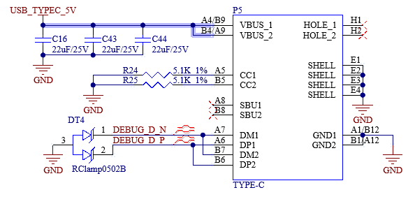
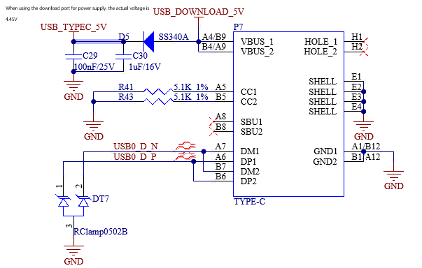
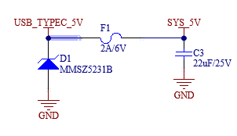
When VCC_3V3_EN is at a high level, Q2 turns on, which in turn activates Q1, connecting SYS_5V to the VCC_5V network, powering on the carrier board.
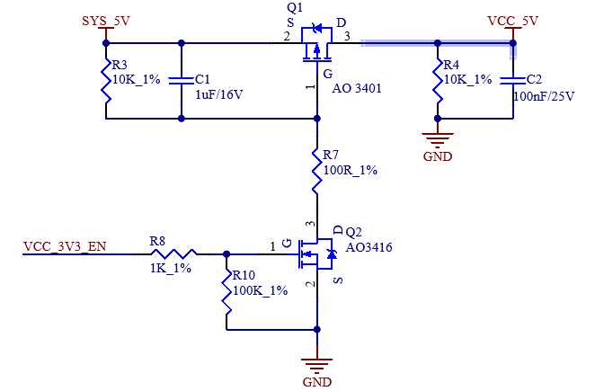
This circuit ensures the SoM powers on first, followed by the carrier board, preventing latch-up effects that could damage the CPU.
The 3.3V for the carrier board is from the DC-DC converter, named VCC_3V3. The 1.8V for the carrier board is from an LDO regulator, converting 3.3V, and is named VCC_1V8.
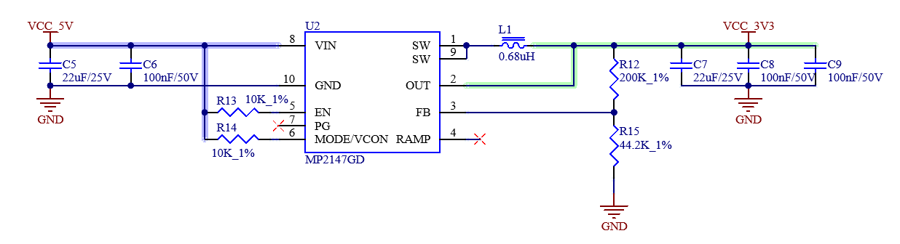
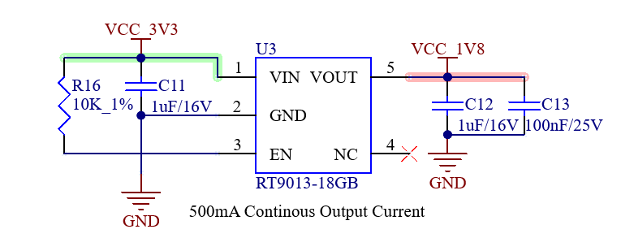
Note:
It is recommended to use a USB-HUB with independent power supply to ensure stable power for the development board;
When using high-power peripherals, do not power the development board through the USB port of the computer , as the high current could damage the motherboard of the computer.
3.5.3 BOOT Configuration
This pin, SARADC_IN0_BOOT, has a dual function: serving as a user key input and as a system boot mode selection pin. It is configured via resistor R5. You can select to use it as a key or a boot mode selection pin by soldering or not soldering the R5 resistor.
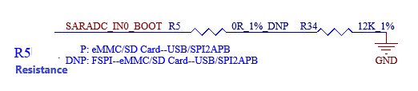
Since the eMMC storage and the TF card share the same set of data bus, they cannot be used simultaneously. When using a SoM equipped with eMMC, the TF card slot cannot be used either as a system boot medium or as additional storage.
3.5.4 Debugging Serial Port
A USB Type-C interface is reserved on the carrier board specifically for system debugging. Its functions are as follows:
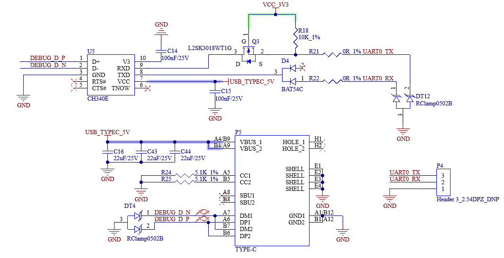
Note:
To facilitate later-stage debugging, it is recommended that this debug serial port (UART) be routed out to a header on the user-designed baseboard.
3.5.5 USB Download
The USB Type-C port (P7) on the right side of the development board is used to connect to a computer for system image programming (flashing). The TYPEC interface can also be used to supply power to the whole board. Note that the power supply of the whole board will be lower than 5V due to the D5 diode.
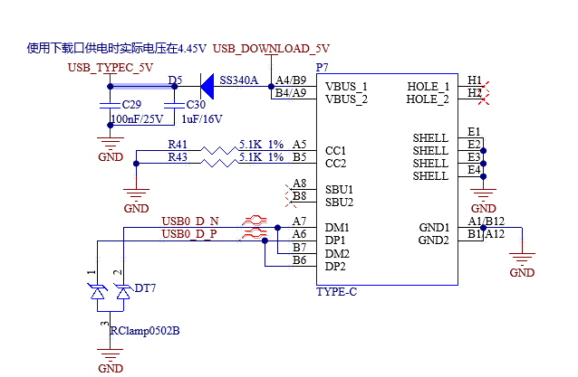
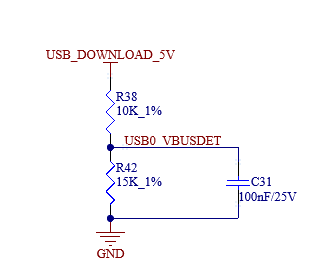
3.5.6 100Mbps Ethernet Interface
There is 1 x 10/100M auto-negotiation Ethernet interface on the carrier board. When YT8512H is used as the PHY chip, which is led out from the RJ45 socket, the socket model is FC62115BNL, with built-in quarantine transformer.
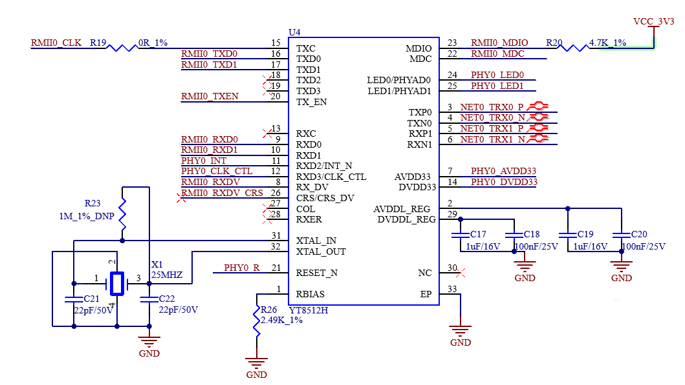
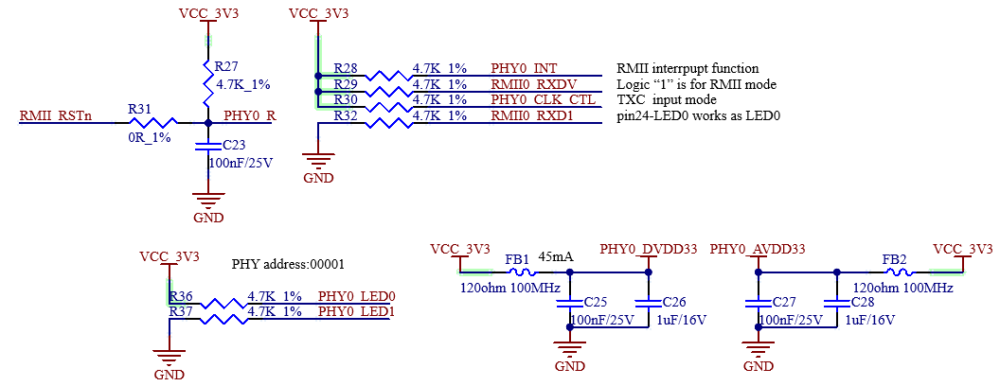
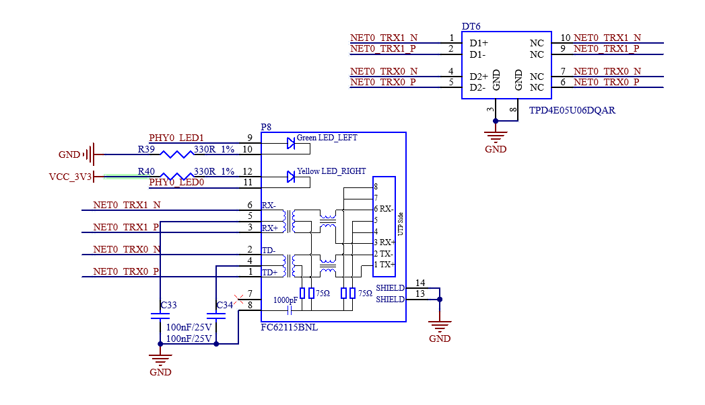
Note: PCB design should ensure that the PHY chip has a complete ground.
3.5.7 TF Card
The TF card on the development board is connected to the CPU SDMMC channel, which is also used by the eMMC on the SoM. Therefore, the TF card cannot be used on development boards configured with eMMC.
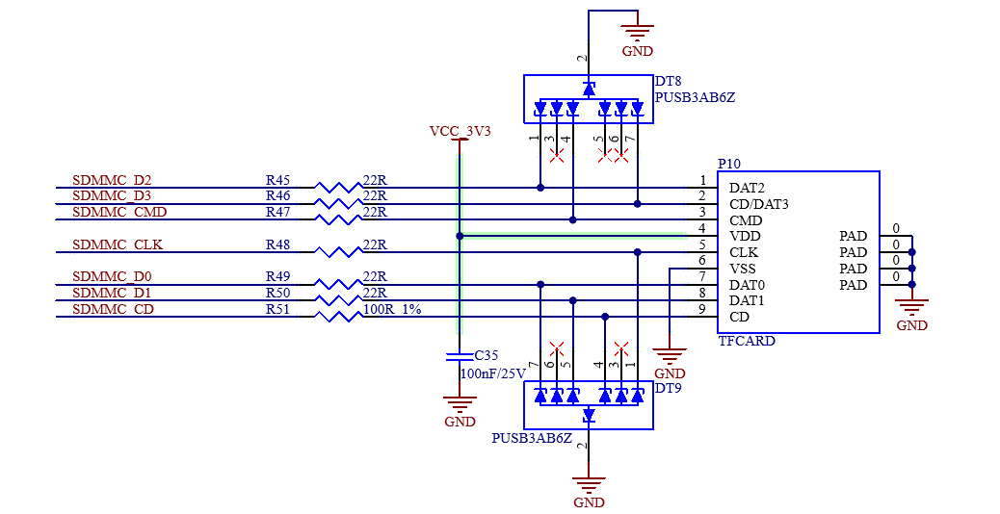
Note:
Note: The bus pull-up resistor has already been configured on the SoM. Don’t apply pull-up to the bus;
The TF card is a hot-pluggable device. Please add ESD protection for it;
Please make equal length for the SD signal.
3.5.8 MIPI-DSI
The P13 FPC socket on the development board can be connected to the MIPI-DSI display screen, and the connector is 30P. Supports 2 lane MIPI-DSI connectivity, 1.5Gbps/lane, touch screen with I2C interface.
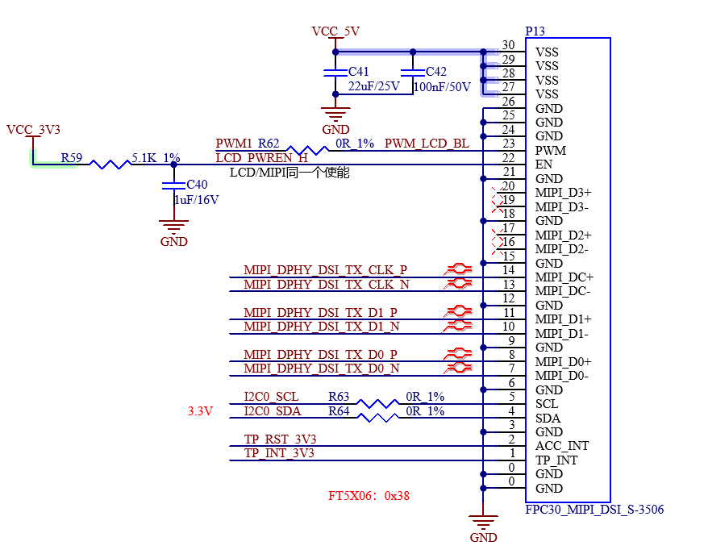
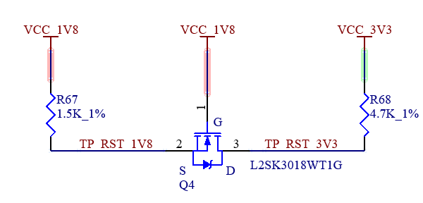
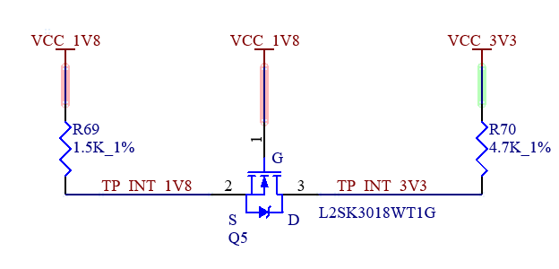
3.5.9 Raspberry Pi 40PIN
The Raspberry Pi 40PIN is reserved on the development board, routed out via P9.
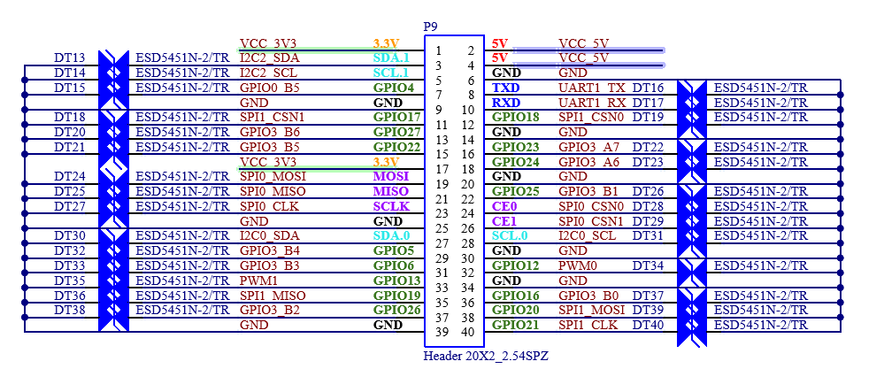
3.5.10 IO
The IO interface is reserved on the development board and routed through P14. It can be used for either LCD or DSMC, and you can select the function as needed It should be noted that the audio function is also routed here, occupying the data lines D2, D3, D9 and D10, and some functions cannot be used at the same time.
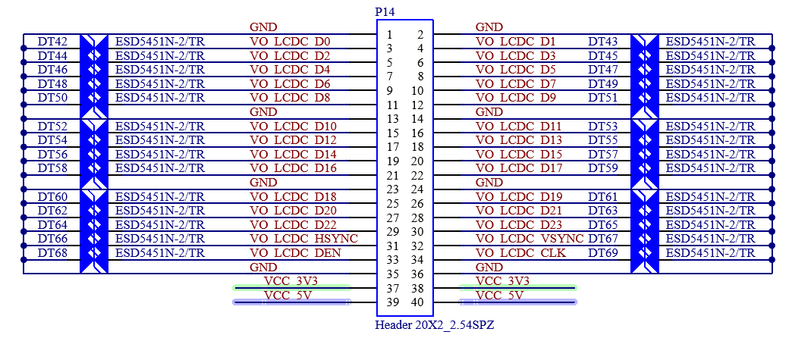
3.5.11 Audio
The development board features a standard 3.5mm headphone jack (CTIA international standard), located at pin P3, which supports stereo headphone playback and mono microphone recording;
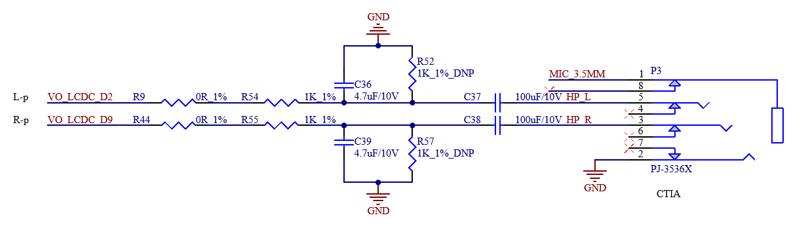
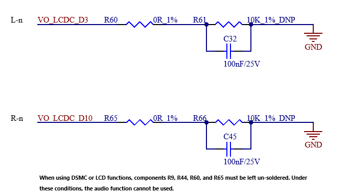
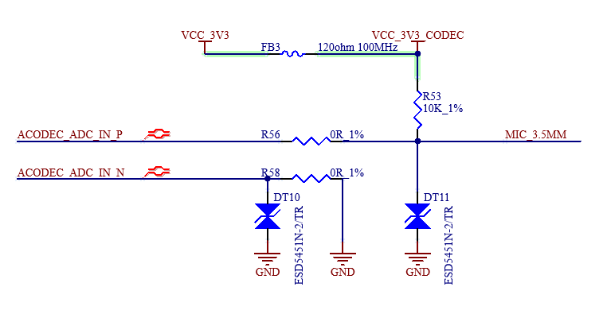
3.5.12 USB2.0
The development board is equipped with a USB 2.0 host port, implemented via a USB Type-A connector (designated as P6). It can be used to connect external devices such as USB flash drives.
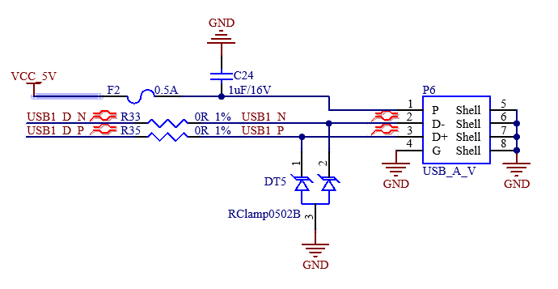
4. Connector Specification Diagram
Stamp hole packaging. Refer to the packaging library for the size.
5. Development Board Linux Consumption Table
No. |
Item |
CPU Temperature |
Usage Rate |
Development Board Power Supply (SoM+Carrier Board) （V） |
Development Board Operating Current (SoM+Carrier Board) （mA） |
Development Board Power (SoM+Carrier Board) (W) |
|---|---|---|---|---|---|---|
1 |
No-load starting peak power consumption |
/ |
/ |
5±5% |
200.176 |
1.01 |
2 |
Sleep power consumption |
/ |
/ |
5±5% |
92.111 |
0.46 |
3 |
No-load standby power consumption |
29.75℃ |
CPU Usage: Idle DDR Usage: 15% |
5±5% |
95.149 |
0.48 |
4 |
USB read and write power |
31.53℃ |
CPU Usage: 36% Idle DDR Usage: 16% |
5±5% |
193.85 |
0.97 |
5 |
TF read and write power |
30.85℃ |
CPU Usage: 37.4% Idle DDR Usage: 16% |
5±5% |
139.873 |
0.70 |
6 |
Network port streaming power consumption |
33.32℃ |
CPU Usage: / DDR Usage: 15% |
5±5% |
140.492 |
0.70 |
7 |
7-inch MIPI screen power consumption |
33.32℃ |
CPU Usage: 19.4% Idle DDR Usage: 15% |
5±5% |
562.775 |
2.81 |
8 |
CPU pressure + memory pressure + EMMC read/write pressure test power consumption |
35.69℃ |
CPU Usage: 100% Idle DDR Usage: 93% |
5±5% |
177.337 |
0.89 |
Note：
1. Current Test: Keep the test time about 10 S, and record the average value of current; 2. U-BOOT: U-Boot 2017.09-g3fe339f #zmx (Jul 10 2025 - 10:06:23 +0800); 3. Kernel Version: Linux ok3506-buildroot 6.1.99 #1 SMP PREEMPT Thu Jul 10 10:21:30 CST 2025 armv7l GNU/Linux; 4. Power consumption is for reference only.
6. Minimum System Diagram
It has SoM, power, debug serial port, system image flashing port.
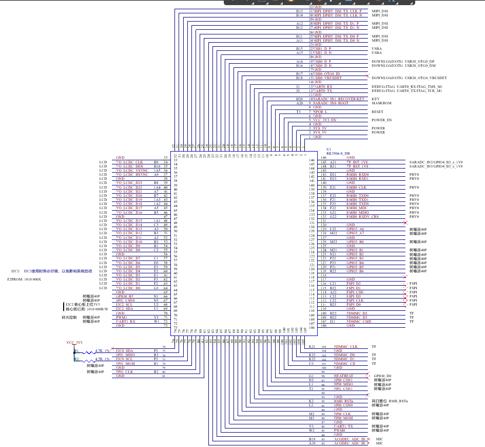
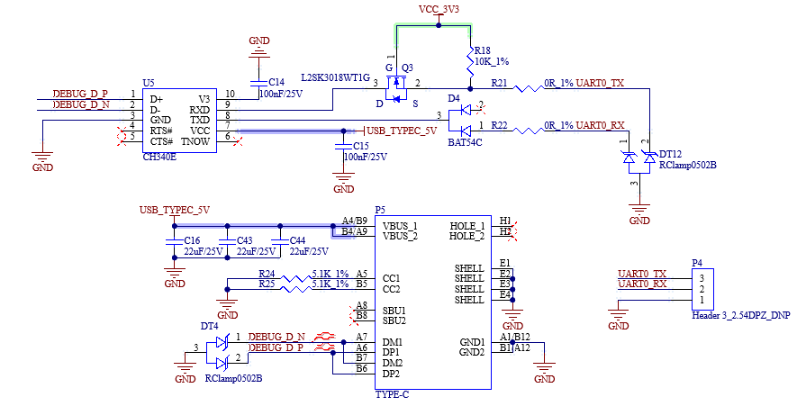
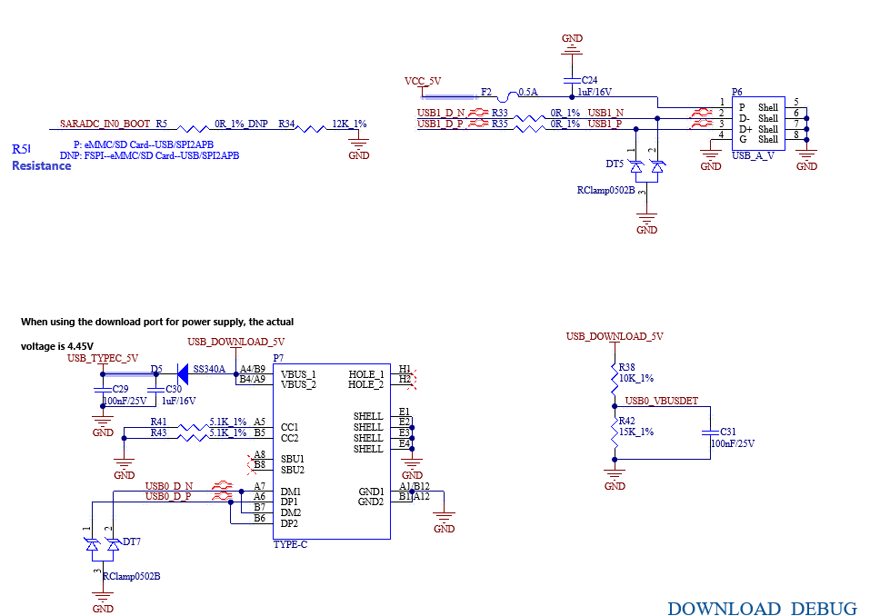
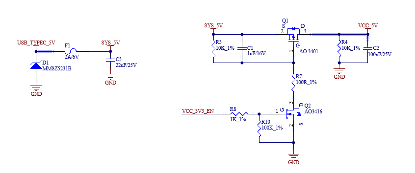
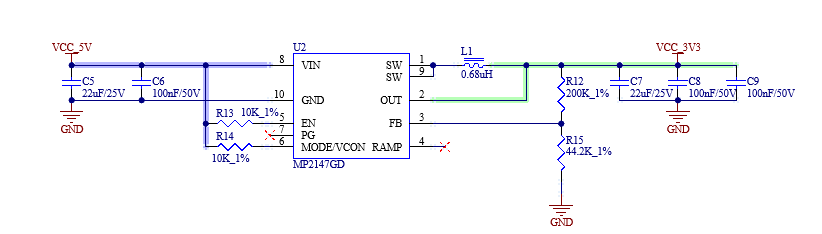